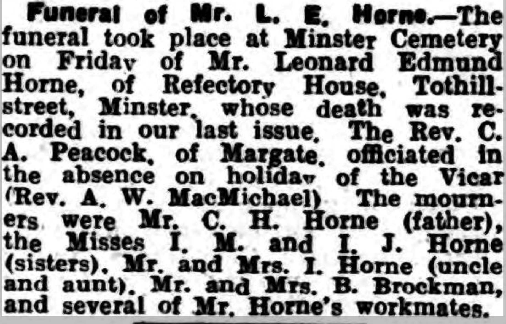

Leonard Edmund Horne 1912 - 1941
[ Home ] | [ Calendar ] | [ Surnames Index ] | [ Errors ] | [ Family History ]An agricultural labourer and the child of Charles Horne (a market gardener worker) and Amy Spratt, Leonard Horne, the first cousin once-removed on the father's side of Nigel Horne, was born in St Peters, Thanet, Kent, England on 5 Jun 19121,2.
During his life, he was living at Sacketts Hill Farm, St Peters, Thanet, Kent, England on 19 Jun 19211; and on Refectory House, Tothill Street, Minster in Thanet on 29 Sept 19392 and in 1941 (the same place as his father had been living on 29 Sept 1939).
He died on 9 Aug 1941 on Foxborough Lane, Minster in Thanet3,4.
Parents
- Charles Henry was born on 1 Apr 1884
- Amy was born c. May 1879
Citations
- 1921 Census Of England & Wales - Findmypast (was age 9 and the son of the head of the household)
- 1939 Register - Findmypast (was the son of the head of the household)
- England & Wales Government Probate Death Index 1858-2019 - Findmypast
- England & Wales deaths 1837-2007 - Findmypast
Media
Leonard Edmund Horne - probate

Thanet Advertiser 22 Aug 1941

1939 Register Transcription - TNA-R39-1820-1820E-007-15
England & Wales births 1837-2006 - BMD/B/1912/3/AZ/000668/148
England & Wales deaths 1837-2007 - BMD/D/1941/3/AZ/000387/085
1939 Register Transcription - TNA-R39-1820-1820E-007-17
1939 Register Transcription - TNA-R39-1820-1820E-007-16
Family Tree

Map
Generated by ged2site. Last updated on Jul 3, 2024
Known Issues
Residence record for 1941 contains no citation
Location for 19 Jun 1921 (Sacketts Hill Farm, St Peters, Thanet, Kent, England) differs from mother's (Sackettshill Farm, Thanet, Kent, England)